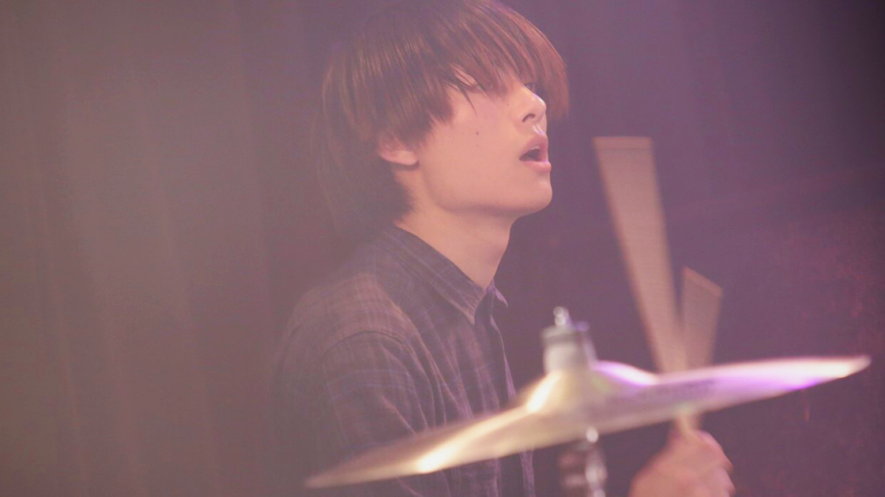

ゆーや(Dr.)が11月の自主企画を持って脱退します。
いつも水上カルビを応援して頂き、誠にありがとうございます。
水上カルビのドラム担当である「ゆーや」が、11月の下北沢シェルターで行われます自主企画を持ちまして脱退することになりました。
下記より、ゆーや本人からのコメントです。
今回脱退することになりました水上カルビDrのゆーやです。
この脱退は完全に自分のわがままをメンバーに聞いてもらった形になります。
脱退の理由は、音楽性の違いから気持ちが離れてきてしまい、ついていけなくなってしまったというのが大きな理由です。
このバンドを通じて多くの人と出会い、学び、成長させていただきました。
今まで関わって頂いた全ての人に感謝しています。
自分がこのバンドを脱退しても、きっとカルビのメンバーは止まることなく走り続けるでしょう。
そんな彼らをいつまでも応援してあげてもらいたいです！
1年半という短いけど、とても濃い時間をくれたら水上カルビに感謝して、これからもゆーやは音楽を続けていきます！
これから水上カルビとゆーや、別の道を歩むことになりますが応援よろしくお願いします！
ゆーや
